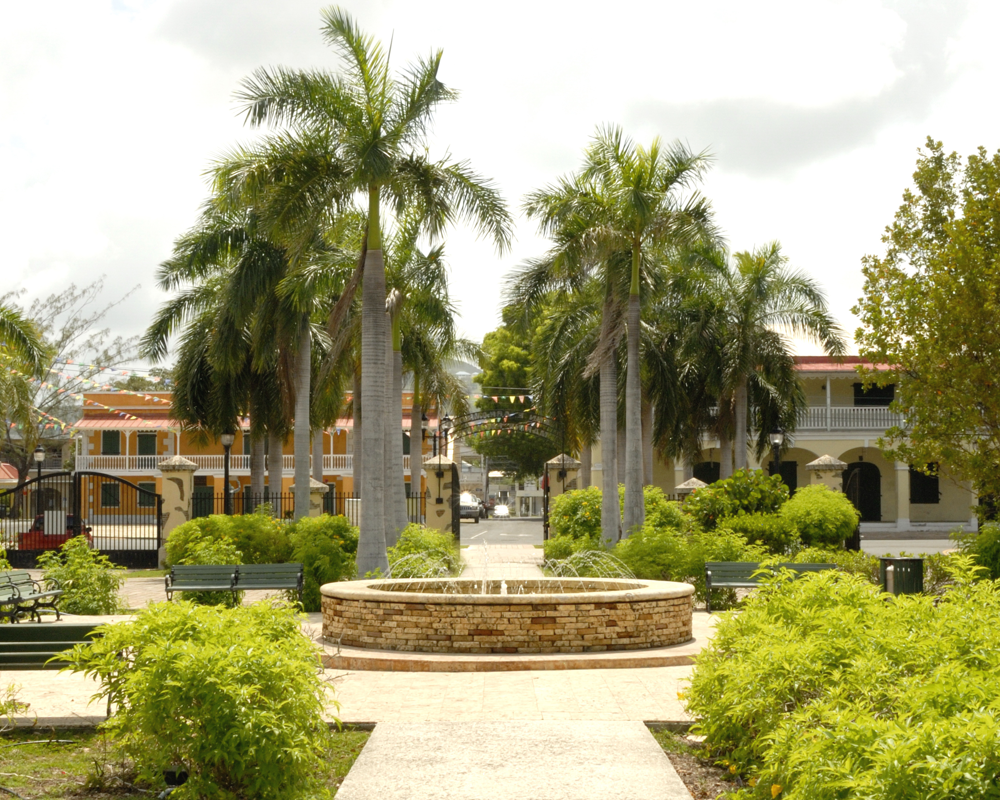
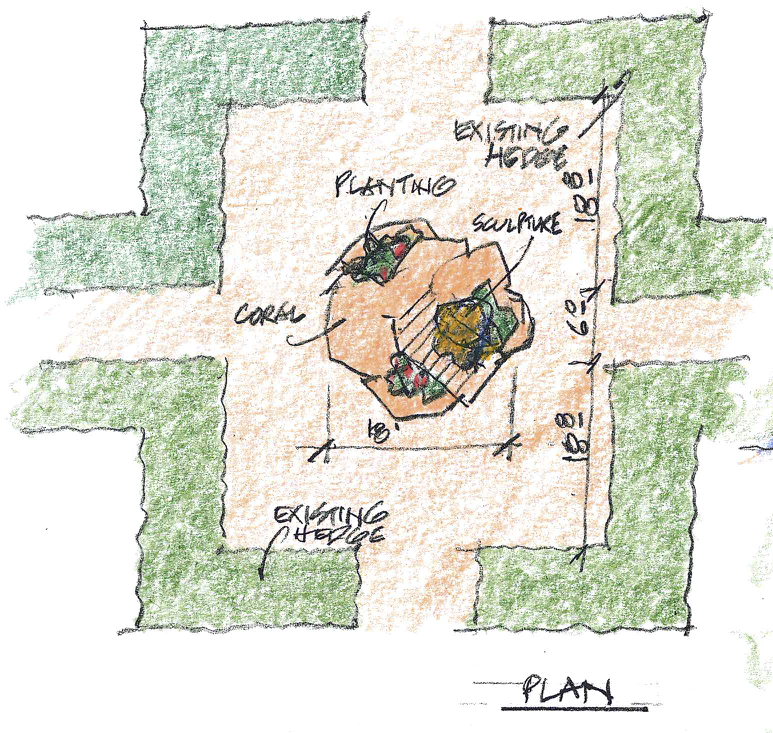

the carribean museum center for the arts
the coal woman
A monumental sculpture installation for Frederiksted Pier honoring the coal women of the Virgin Islands

For almost a century, this is all women were paid for carrying the baskets of coal which fueled the ships throughout the Carribean
Join us today and be part of our effort in honoring these hardworking women of our past

Susan Luery

The Pier

The Maquette
Donate today